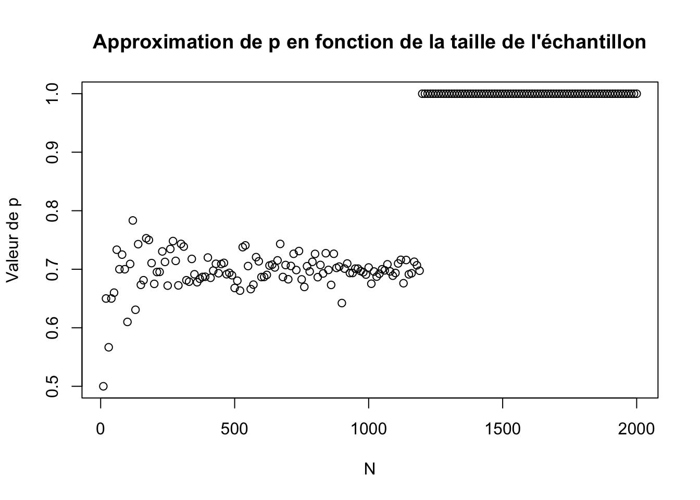
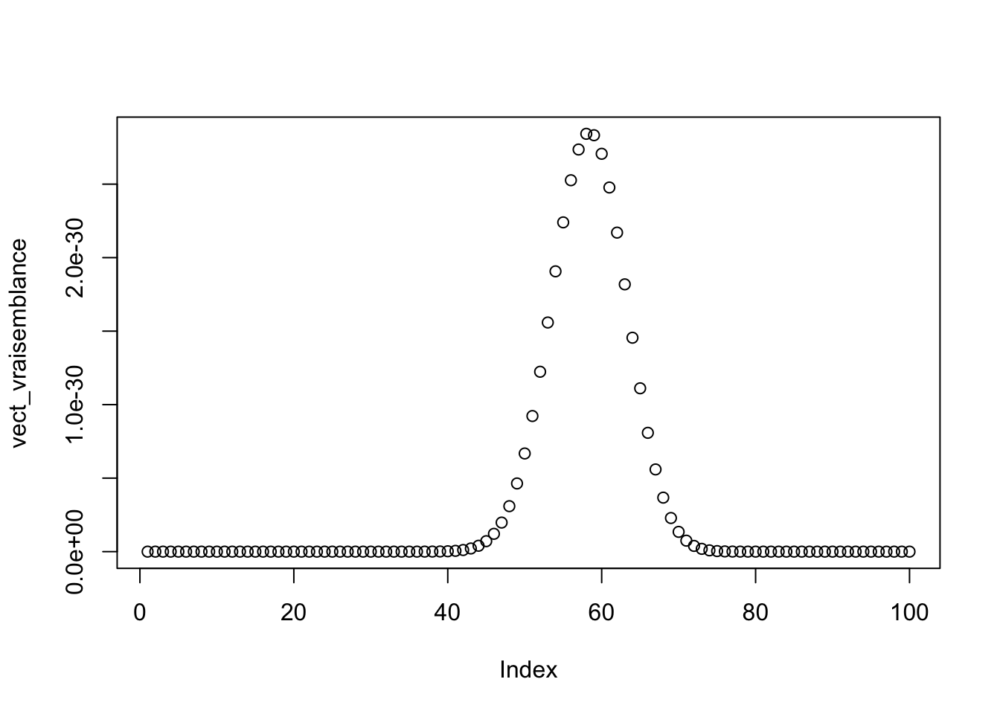
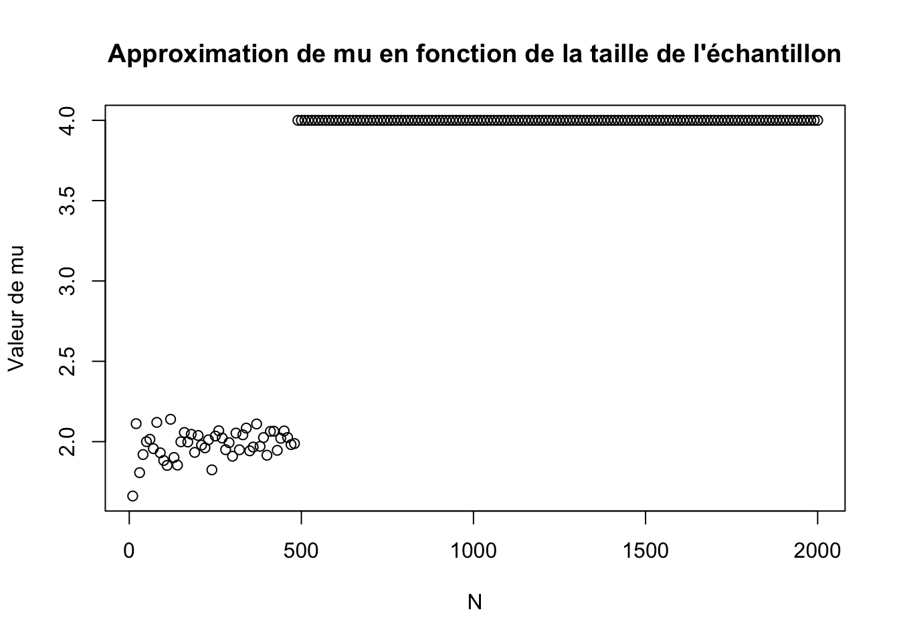
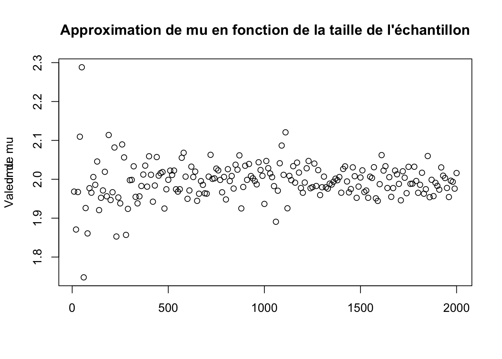

MAKAROFF_NICOLAS_TPSTAT3
Nicolas Makaroff
15/03/2019
1. Maximum de vraisemblance
1.a Estimation de p
X_N <- rbinom(n=10,size=1,prob=0.7)
X_N## [1] 1 0 1 1 1 0 1 1 1 0Une estimation rapide de \(p\) est de trouver le paramêtre qui maximise la vraisemblance.
1.b
source("L_bern.R")1.c
vect_p=seq(0,1,length.out=100)
vect_vraisemblance <- sapply(vect_p,function(vect_p) L_bern(X_N,vect_p))
plot(vect_vraisemblance)
On remarque que la vraisemblance forme un pic autour d’une valeur particulière qui est la valeur de p. Cette valeur reste malheureusement peu précise car l’échantillon pris est très petit. ## 1.d
interval=c(0,1)
optimize(function(vect_p) L_bern(X_N,vect_p),interval,lower=min(interval),upper=max(interval),maximum = TRUE)## $maximum
## [1] 0.6999843
##
## $objective
## [1] 0.002223566On trouve finalement une valeur pour \(p=0.7\).
1.e
library(knitr)
knitr::opts_chunk$set(echo=FALSE,message=FALSE,warning=FALSE)
p <- 0.7 ; N0 <- 10 ;Nn <- 2000 ; n <- 200
N <- 0 * 1:n
res <- 0 * 1:n
step <- (Nn - N0) / (n - 1)
for (i in 1:n) {
N[i] <- as.integer(N0 + (i - 1) * step)
X_Ni <- rbinom(n=N[i], size=1, prob=p)
px <- optimize(function(px) { L_bern(X_Ni, px) }, interval=c(0, 1),lower=min(interval),upper=max(interval),maximum=TRUE)
res[i] <- px$maximum
}
plot(N, res,ylab="")
title(main="Approximation de p en fonction de la taille de l'échantillon",ylab = "Valeur de p")
mean(res) ## [1] 0.8235934
On remarque que plus N est grand plus on se rapproche de la valeur attendue avec un meilleur écart. Pour combattre l’instabilité on passe à la log-vraisemblance : \[\log(L_n(x))=\sum\limits_i \log(f(x_i;p))\]
## [1] 0.6989751
On remarque que les points sont de moins en moins dispercé (la figure prend la forme d’un cône) plus on se rapproche d’un n grand.
1.f
data <- read.csv("/Users/nicolasmakaroff/Downloads/distribution_inconue_2_100_realisations.csv")
vect_p=seq(0,1,length.out=100)
vect_vraisemblance <- sapply(vect_p,function(vect_p) L_bern(data$x,vect_p))
plot(vect_vraisemblance)
interval=c(0,1)
optimize(function(vect_p) L_bern(data$x,vect_p),interval,lower=min(interval),upper=max(interval),maximum = TRUE)## $maximum
## [1] 0.580002
##
## $objective
## [1] 2.852948e-30
2 Ajuster d’une loi normale d’écart type
2.a
X_N <- rnorm(n=30,mean=2,sd=1)
X_N## [1] 2.2970193 4.2872739 2.0547460 1.3063821 2.9284066 -1.4030773
## [7] 2.5747842 0.9700251 2.2807379 0.8523343 1.3225007 1.6088912
## [13] 2.2946679 0.7810950 3.8857912 1.2243563 1.4800240 1.8903309
## [19] 2.7837127 1.3007153 2.8634840 2.2308903 2.3238026 0.6601786
## [25] 1.9339757 2.3395664 3.5320467 0.7873874 1.9891056 1.44475522.b
source("L_norm.R")
vect_p=seq(0,4,length.out=100)
vect_vraisemblance <- sapply(vect_p,function(vect_p) L_norm(X_N,vect_p,2))
plot(vect_vraisemblance)
2.c
interval=c(0,4)
optimize(function(vect_p) L_norm(X_N,vect_p,2),interval,lower=min(interval),upper=max(interval),maximum = TRUE)## $maximum
## [1] 1.894184
##
## $objective
## [1] 1.1919e-23On trouve alors une valeur pour
2.d
library(knitr)
knitr::opts_chunk$set(echo=TRUE,message=FALSE,warning=FALSE)
mu <- 2
N0 <- 10
Nn <- 2000
n <- 200
N <- 0 * 1:n # vecteur des 'N'
dmu <- 0 * 1:n # vecteur des '| mu - mux |', où mu = 2, et px la valeur d'optimize
step <- (Nn - N0) / (n - 1)
for (i in 1:n) {
N[i] <- as.integer(N0 + (i - 1) * step)
X_Ni <- rnorm(n=N[i], 2, 1)
mux <- optimize(function(mux) { L_norm(X_Ni, mux,1) }, interval=c(0, 4), maximum=TRUE)
dmu[i] <- mux$maximum
}
plot(N, dmu,ylab="")
title(main="Approximation de mu en fonction de la taille de l'échantillon",ylab = "Valeur de mu")
mean(dmu)## [1] 3.505128
On remarque que comme dans le cas de l’exercice 1, il faut passer à la log-vraisemblance.
library(knitr)
knitr::opts_chunk$set(echo=TRUE,message=FALSE,warning=FALSE)
mu <- 2 # le paramètre réel de notre loi
N0 <- 10
Nn <- 2000
n <- 200
N <- 0 * 1:n # vecteur des 'N'
dmu <- 0 * 1:n # vecteur des '| mu - mux |', où mu = 2, et px la valeur d'optimize
step <- (Nn - N0) / (n - 1)
for (i in 1:n) {
N[i] <- as.integer(N0 + (i - 1) * step)
X_Ni <- rnorm(n=N[i], 2, 1)
mux <- optimize(function(mux) { log_L_norm(X_Ni, mux,1) }, interval=c(0, 4), maximum=TRUE)
dmu[i] <- mux$maximum
}
plot(N, dmu,xlab="")
title(main="Approximation de mu en fonction de la taille de l'échantillon",ylab = "Valeur de mu")
mean(dmu)## [1] 1.996266
On remarque encore une fois l’apparition d’un cône pour n de plus en plus grand et une convergence du paramètre \(\mu\) vers \(2\) la valeur théorique.
3 Ajuster une loi à plusieurs paramètres
Un calcul donne rapidement : \(f(x)=\lambda\exp^{-\lambda(x-L)}=\lambda\exp^{-\lambda x}\times\exp^{-\lambda L}\) Ce qui permet de créer facilement un échantillon.
#taille de l'échantillon
N<-1000
lambda<-2
L<-4
echan_gaussien <- rexp(N,lambda)*exp(-lambda*L)x0<--2
alpha<-0.4
echan_cauchy<-rcauchy(N,x0,alpha)source("log_vrais_3.R")
library(ggplot2)
#discretisation de l'espace
n <- 100
#création d'un dataframe
lambdas <- rep(seq(1.0, 4.0, (3.0) / (n - 1)), times=n)
Ls <- rep(seq(2.0, 6.0, (6.0 - 2.0) / (n - 1)), each=n)
vraisemblance <- c()
gradient <- c()
# calcul de l'argmax du max
m <- 1
for (i in 1:(n*n)) {
vraisemblance[i] <- L_exp(echan_cauchy, lambdas[i], Ls[i])
#transformation évitent les valeurs de -infiny du gradient
gradient[i] <- exp(vraisemblance[i]*0.0001)
#gradient[i]=1/gradient[i]
m <- if (vraisemblance[i] > vraisemblance[m]) i else m
}
df <- data.frame(lambdas, Ls, vraisemblance, gradient)
ggplot(df, aes(lambdas, Ls)) +
geom_raster(aes(fill = gradient)) +
scale_fill_gradientn(colours = topo.colors(4))
# valeurs des paramètres pour lesquels la vraisemblance est maximal:
c("lambda_max" = lambdas[m], "l_max" = Ls[m])## lambda_max l_max
## 4 6Il a fallu dans ce cas gérer des valeurs du gradient valant \(-\infty\) mais le résultat obtenu au tracé ne semble pas juste car pas centré sur les valeurs de \(\lambda\) et \(L\) attendues.
source("log_vrais_3.R")
library(ggplot2)
#discretisation de l'espace
n <- 100
#création d'un dataframe
x0s <- rep(seq(-4.0, 0.0, (0.0 - -4.0) / (n - 1)), times=n)
alphas <- rep(seq(0.0, 1.0, (1.0 - 0.0) / (n - 1)), each=n)
vraisemblance <- c()
gradient <- c()
# calcul de l'argmax du max
m <- 1
for (i in 1:(n*n)) {
vraisemblance[i] <- L_cauchy(echan_cauchy, x0s[i], alphas[i])
#transformée par une transformation croissante qui améliore le résultat visuel
gradient[i] <- exp(vraisemblance[i] * 0.1)
m <- if (vraisemblance[i] > vraisemblance[m]) i else m
}
df <- data.frame(x0s, alphas, vraisemblance, gradient)
ggplot(df, aes(x0s, alphas)) +
geom_raster(aes(fill = gradient)) +
scale_fill_gradientn(colours = topo.colors(4))
# vrais paramètres
c("x0" = x0, "alpha_max" = alpha)## x0 alpha_max
## -2.0 0.4# valeurs des paramètres pour lesquels la vraisemblance est maximal:
c("x0_max" = x0s[m], "alpha_max" = alphas[m])## x0_max alpha_max
## -2.0202020 0.3838384